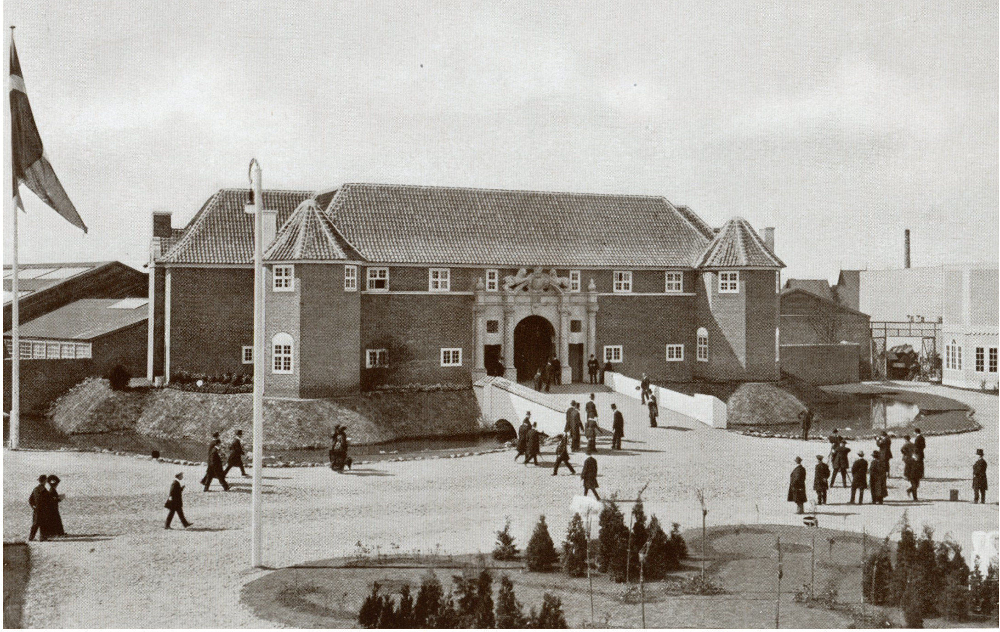
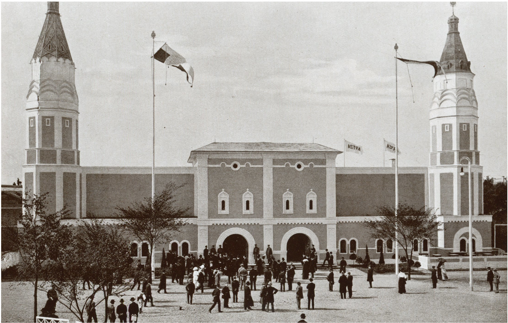

.jpg)

.jpg)

Klicka på bilden för att förstora
Den sista manifestationen av jugendstilen inom arkitektur & konst i Sverige
Baltiska utställningen var en internationell konst-, industri- och hantverksutställning som hölls mellan 15 maj och 4 oktober 1914 i Malmö. Fyra nationer deltog: Sverige, Danmark, Tyskland och Ryssland. Var och en uppförde en nationell utställningsbyggnad — byggd och riven enbart för tillfället — och tillsammans utgjorde de jugendstilens sista stora uttryck inom arkitektur och konst i Sverige.
Utställningen var både fest och tävling. Varje nation ville visa upp sina kulturella landvinningar, och lokaltidningarna eldade på nationalkänslan på båda sidor om Östersjön.
Jugendstilen blomstrade från 1890-talet till 1920-talet som en reaktion mot historicismens konventioner. Den hämtade inslag från flera konstriktningar och kännetecknas av asymmetri, slingrande växt- och blommotiv och ett naturalistiskt ornamentspråk. Baltiska utställningen representerade jugendstilens senare fas — mer geometrisk och rätlinjig än de tidigare uttrycken.
Utställningen omfattade 51,6 hektar — den största i Norden vid den tiden och dubbelt så stor som Stockholmsutställningen 1897.
Allt som berättas på den här webbplatsen bygger på det digitaliserade materialet: utställningskatalogerna från Malmö stadsbibliotek och 37 skanningar ur fem inbundna volymer med tidningsklipp på Malmö stadsarkiv — bland dem den officiella planritningen över utställningen från 1914. Klippen för berättelsen bortom de officiella katalogerna: stormen som slet taket av Baltiska tornet, de fackliga konflikterna vid tornet och den danska paviljongen, dödsolyckan vid den tyska hallen och de nationella rivaliteter som utspelade sig i pressen.
Webbplatsen är det offentliga resultatet av ett digitaliseringsprojekt som gjorde materialet tillgängligt för allmänheten igen. Utställningen samlade nationer som inom några månader efter stängningen skulle befinna sig i krig — en sammankomst präglad av skaparkraft på randen till katastrof.
Metoderna som tillämpats — strukturerad metadata, rättighetshantering, digital leverans från början till slut och publicering av öppna data — går att överföra till alla organisationer som förvaltar ostrukturerade informationstillgångar: kommunala arkiv, kunskapsbaser i företag, bibliotekssamlingar eller träningsdata för AI.
För en ärlig redogörelse för vad som fungerade och vad som borde ha gjorts annorlunda, se Reflektioner.
Krigets inpå
Baltiska utställningen stängde den 4 oktober 1914 — bara två månader efter första världskrigets utbrott. När Sverige, Danmark, Tyskland och Ryssland samlades i Malmö i maj 1914 närmade sig de politiska spänningarna i Europa redan bristningsgränsen. Mordet på ärkehertig Franz Ferdinand i Sarajevo skedde den 28 juni, mitt under utställningen. Tyskland och Ryssland, vars nationspaviljonger stod sida vid sida på utställningsområdet, låg i krig med varandra inom några veckor från invigningen. Baltiska utställningen blev därmed ett ofrivilligt monument över ett försvinnande ögonblick av fred — en sammankomst av nationer på randen till katastrof.
En tradition av internationella utställningar
Internationella utställningar hade varit en tongivande kulturell institution sedan världsutställningen 1851 i Crystal Palace i London. De var tänkta som hyllningar till industri, hantverk och nationella framsteg och erbjöd en sorts tävlande diplomati som fördes med arkitektur och formgivning i stället för vapen. Världsutställningen i Paris 1900, världsutställningen i S:t Louis 1904 och Stockholmsutställningen 1897 föregick alla Baltiska utställningen och etablerade mallen med särskilt uppförda nationspaviljonger, byggda för tillfället och rivna när evenemanget var över. Baltiska utställningen följde denna tradition i regional skala — med fokus på kulturerna runt Östersjöns stränder.
Jugend som europeisk rörelse
Jugendstilen — uppkallad efter Münchentidskriften Jugend (Ungdom), grundad 1896 — var på samma gång en paneuropeisk rörelse och en utpräglat nationell. Varje land anpassade formspråket efter lokala traditioner: i Finland smälte stilen samman med nationalromantiken, i Österrike fick den Wienersecessionens stränga geometri och i Frankrike och Belgien omfamnade den organiska, naturalistiska kurvor. De svenska och danska bidragen vid Baltiska utställningen hämtade från alla dessa strömningar och blandade ett internationellt ornamentspråk med inhemska motiv. År 1914 pekade senjugendens tyngre, mer geometriska former redan fram mot det som skulle bli den tidiga modernismen.
Att bevara det som finns kvar
Fysiskt arkivmaterial — fotografier, illustrerade kataloger, arkitektritningar — är sårbart för förfall, spridning och glömska. Digitalisering förvandlar dokumenten till sökbara, delbara och reproducerbara poster som kan överleva sina fysiska original. Materialet på webbplatsen kommer från tryckta kataloger och fotografier på Malmö stadsbibliotek och från fem inbundna volymer med tidningsklipp från 1912–1914 på Malmö stadsarkiv (SEMSA00032, vol. Ö II1–II6), som även innehåller den officiella planritningen över utställningen. Den historiska berättelsen på varje sida bygger på dessa källor. Ingen motsvarande digital samling av materialet hittades under arbetet med projektet. Att göra det tillgängligt på nätet är en bevarandeinsats: det ser till att en kort och märkvärdig sammankomst av nationer i en svensk hamnstad inte helt faller i glömska.
Utställningen i tidningarna, 1912–1914
Fem inbundna volymer med tidningsklipp på Malmö stadsarkiv (SEMSA00032, vol. Ö II1–II6) följer utställningen från byggarbetsplats till sista veckan. Trettiosju sidor digitaliserades för projektet, och varje händelse på webbplatsen är hämtad därifrån. Varje post länkar till sin skanning.
-
Kejsar Wilhelm till baltiska spelen
Kejsar Wilhelm II väntas besöka utställningen sommaren därpå, under de Baltiska spelen.
Vol. Ö II5, s. 58 -
Svenskar, tyskar och danskar i tävlan
Arrangörerna uppmanar svensk industri att delta: de danska och tyska programmen visar att båda länderna förbereder sig för att tävla om prestige.
Vol. Ö II5, s. 108 -
Militär handräckning till Baltiska
Eftersom yrkesarbetare saknas ber styrelsen regeringen om 200 ingenjörssoldater för att hjälpa till att färdigställa området före invigningen.
Vol. Ö II5, s. 33 -
Strejk vid Baltiskan
En vecka före invigningen strejkar 47 vakter och städare. De fick 100 kronor i månaden för tolvtimmarspass och krävde 140 kronor och åttatimmarsdag. Polis och reservvakter från de utländska hallarna håller vakt under natten, och statens förlikningsman erbjuder sig att medla.
Vol. Ö II3, s. 135 Vol. Ö II5, s. 27 Vol. Ö II5, s. 28 -
Officiell plan öfver Baltiska utställningen
Utställningens officiella planritning, undertecknad av generalkommissarien, med ett register över varje hall och paviljong — den enda kartan i klippvolymerna.
Vol. Ö II6, s. 96–97 -
Öfver en miljon för utställningsbiljetter
En vecka före stängningen: 641 084 dagbesökare, 115 999 till konsthallen och biljettintäkter på 1 099 897,20 kronor.
Vol. Ö II4, s. 103
Digitaliseringsflödet
Källmaterial
Utställningskataloger och fotografier från Malmö stadsbibliotek; fem inbundna volymer med tidningsklipp, däribland den officiella planritningen, från Malmö stadsarkiv — fysiska dokument som riskerar att förfalla.
Digitalisering
Högupplöst skanning av det fysiska materialet, som ger bildfiler av arkivkvalitet som bevaras i repositoriet.
Metadata
Varje objekt beskrivs med Dublin Core-metadata och transkriberas som TEI XML — strukturerat, maskinläsbart och interoperabelt.
Publik webbplats
Det digitaliserade innehållet publiceras som en fritt tillgänglig webbplats — och för tillbaka en försvunnen utställning från 1914 inom allmänhetens räckhåll.
Metoderna som tillämpats här — strukturerad metadata, rättighetshantering, digital leverans från början till slut och publicering av öppna data — går att överföra till alla organisationer som förvaltar ostrukturerade informationstillgångar: arkiv, kunskapsbaser, bibliotekssamlingar eller träningsdata för AI.
För en utförlig redogörelse för metoderna och standarderna i varje steg, se metodsidan.